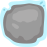
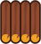
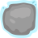
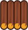

کانگورو
روی سلولها کلیک کنید تا بایور را به پرچم برسانید.
او تنها میتواند به سلول همسایهای برود که محتوای آن با سلول فعلیاش متفاوت باشد.
او میتواند از یک جوکر استفاده کند تا یک بار به یک سلول یکسان حرکت کند.
برای کمک به شما، میتوانید روی شبکه چیزی بکشید.
 


